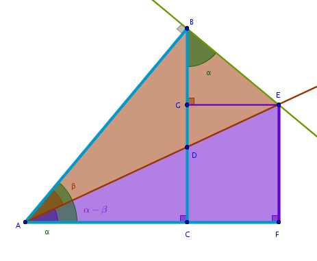

Problem
Express the tangent of a composite angle \(\alpha - \beta\) in terms of trigonometric functions of primitive angles \(\alpha\) and \(\beta\).
Solution
The arrangement of the right triangles that allows us to deduce the identity for the tangent of a difference of two angles is the same one used to deduce the corresponding identity for the sine and the cosine of a difference of two angles:
By definition we have:
$$\tan (\alpha - \beta) = \frac {EF}{AF} =$$ $$\frac {GC}{AF} =$$ $$\frac {GC}{AC + CF} =$$ $$\frac {BC - BG}{AC + CF} =$$ $$\frac {BC - BG}{AC + GE} =$$Divide both parts of the above fraction by \(AC\):
$$\frac {BC - BG}{AC + GE} = \frac {\frac {BC - BG}{AC}} {\frac {AC + GE}{AC}} =$$ $$\frac {\frac {BC}{AC} - \frac {BG}{AC}} {\frac {AC}{AC} + \frac {GE}{AC}} =$$ $$\frac {\tan \alpha - \frac {BG}{AC}}{1 + \frac {GE}{AC}}$$Since:
$$\frac {BC}{AC} = \tan \alpha$$by definition.
In the previous chapters we have already proved that the right triangles \(\triangle ACB\) and \(\triangle BGE\) are similar and hence:
$$\frac {BG}{BE} = \frac {AC}{AB}$$ $$BG \times AB = AC \times BE$$ $$\frac {BG}{AC} = \frac {BE}{AB}$$From \(\triangle ACB\) we have:
$$\frac {BE}{AB} = \tan \beta$$Hence:
$$\frac {BG}{AC} = \tan \beta$$and:
$$\tan (\alpha - \beta) = \frac {\tan \alpha - \tan \beta} {1 + \frac {GE}{AC}}$$To compute the remaining fraction we observe that \(GE\) is a side of the right triangle \(\triangle BGE\) with hypotenuse \(BE\). \(BE\) is also a side of the right triangle \(\triangle ABE\) with side \(AB\). \(AB\) is a hypotenuse of the right triangle \(\triangle ACB\) with side \(AC\).
It follows then that the connection between \(GE\) and \(AC\) is the following - from \(GE\) to \(BE\), from \(BE\) to \(AB\), from \(AB\) to \(AC\). Hence, we work \(BE\) and \(AB\) into the remaining fraction in a neutral but useful way as the rearrangement approach prescribes:
$$\frac {GE}{AC} = \frac {GE}{AC} \times 1 \times 1 =$$ $$\frac {GE}{AC} \times \frac {BE}{BE} \times \frac {AB}{AB} =$$ $$\frac {GE}{BE} \times \frac {BE}{AB} \times \frac {AB}{AC}$$ $$\frac {GE}{BE} = \sin \alpha$$ $$\frac {BE}{AB} = \tan \beta$$ $$\frac {AB}{AC} = \cos \alpha$$and:
$$\frac {GE}{AC} = \frac {\sin \alpha}{\cos \alpha} \tan \beta =$$ $$\tan \alpha \times \tan \beta$$yielding:
$$\bbox[#e8e8e8,3pt]{\tan (\alpha - \beta) = \frac {\tan \alpha - \tan \beta}{1 + \tan \alpha \tan \beta}}$$\(\blacksquare\)